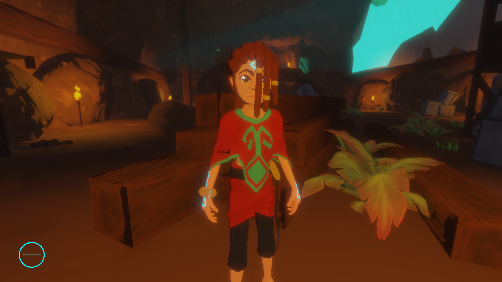

Ilumination: Cel Shading
 Due to the importance of the light on the game, we decided to use cel shading instead of a more real type of lightning.
Some of our inspirations for the lighhtning system were: The legend of Zelda: Wind Waker, Rime and Guilty Gear Xrd's .
The implementetion of the Cel Shading on the game is rather simple. The shader divides the incidation of the light in 2 ranges, depending on the normal of the pixel compared to the light direction. To smooth the transitions between ranges, a smoothstep function is apllied in order to accomplished a gradient between the ranges.
God rays
For the game to work, we needed the player to understand where the lights were. The first thing that crossed our minds was to give volume to the lights but we had a problem, we couldn't make a mesh to contain a ray of light, because our mechanic is dependent on the shadows. To sum it up, we needed a dynamic system to show the volume of a light.
After some investigation, we found that the technique that fits our needs were the god rays. To put it simple, God rays are a 3D effect that takes samples of the shadow map to add fog to different distances of the light beam. This gives an effect of volume to the lights.
The code of the Godrays was made using HSLS. The code is based on this shader, that uses noise to reduce the artifacts of te effect.